Cat Whisperer
A seated stone Jane with four cats, including one perched on her shoulder. Located on the second gallery’s existing sculpture island. No memory frame is assigned.
Final packed model ef4573efb8a19ec61d5fb39171ca9d4c22b614dfb053ee9556111c29a151a9b6, 963,748 bytes, without textures or image data. These captures wait for completed rendering. Both walking routes pass on desktop and fresh portrait emulation. Verification and source contact measurements.
The first hand placement intersected the lap cat and was rejected. The final arrangement has sampled support gaps below 2 mm and no hand vertices inside either cat’s skin by over 1 mm. Sculpture likeness and finish are visual judgments; geometry and functional checks do not close the broader art backlog. Physical-phone performance was not measured.
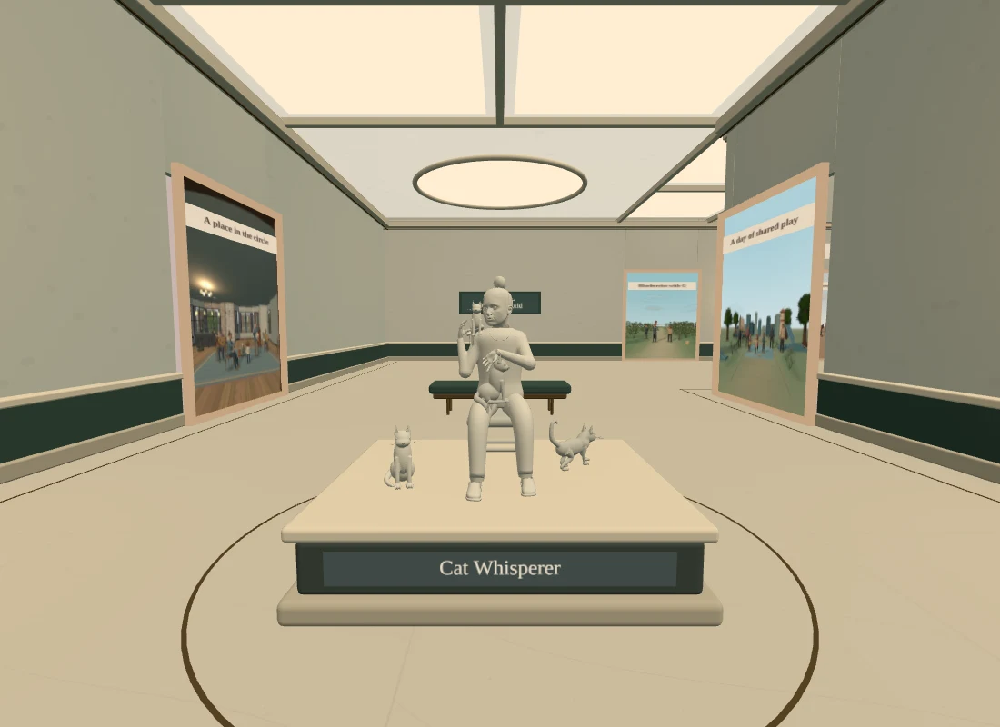
normal front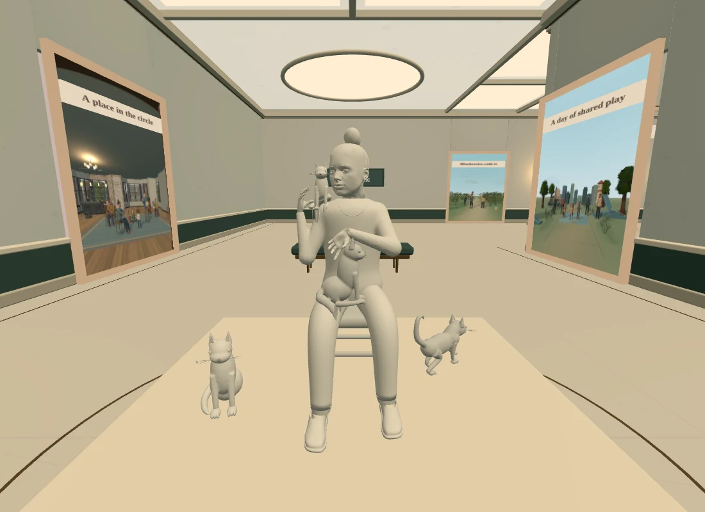
close front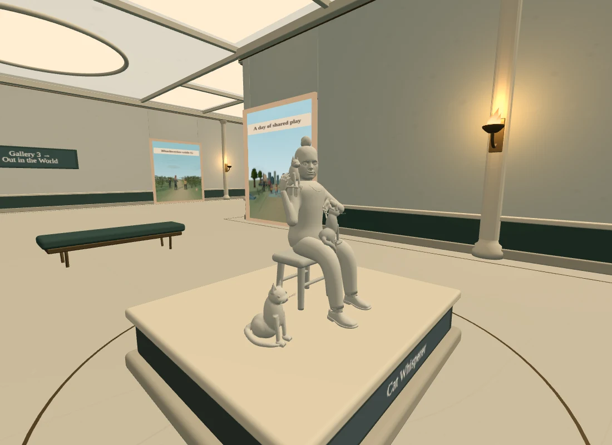
left three quarter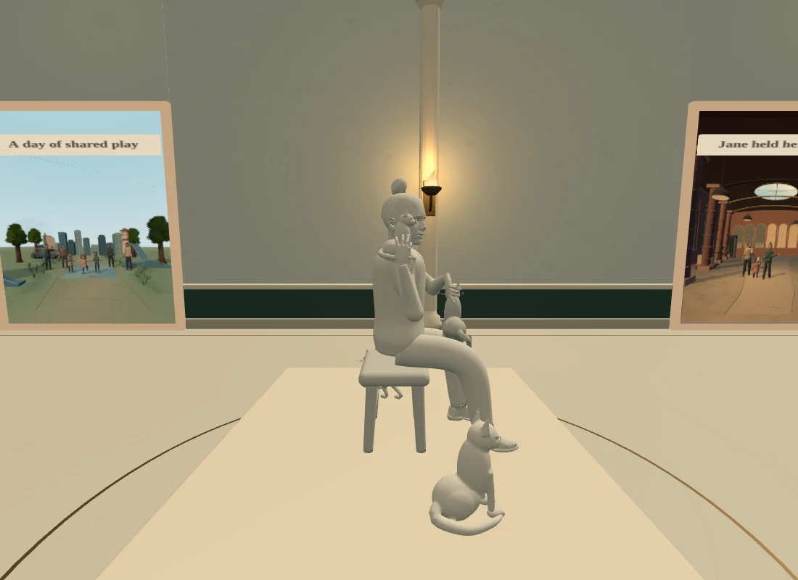
left profile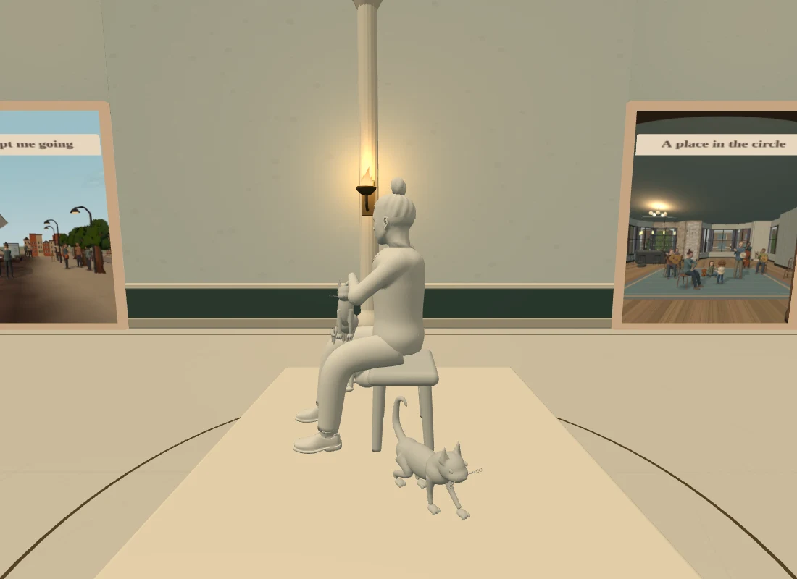
right profile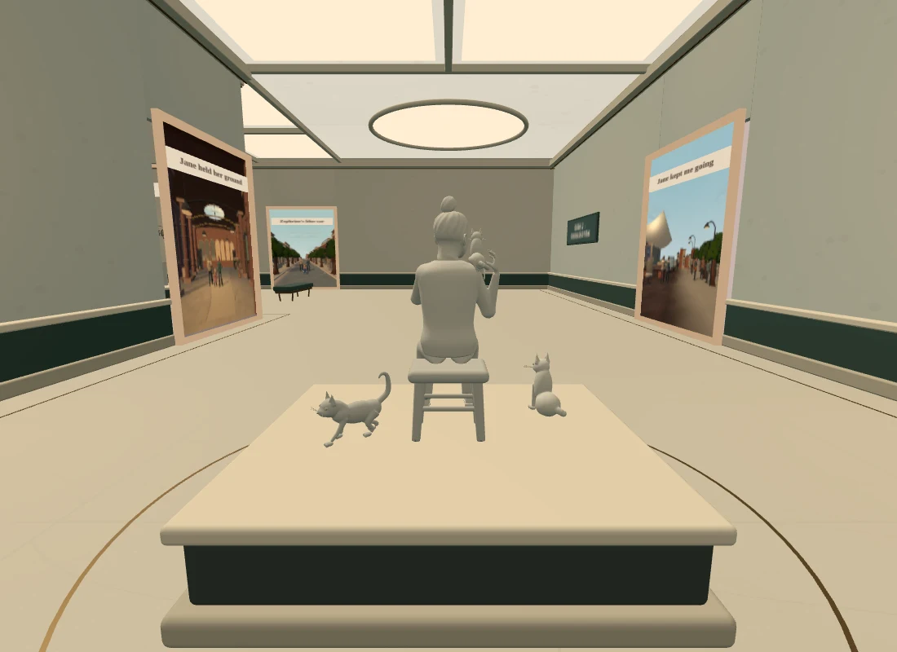
rear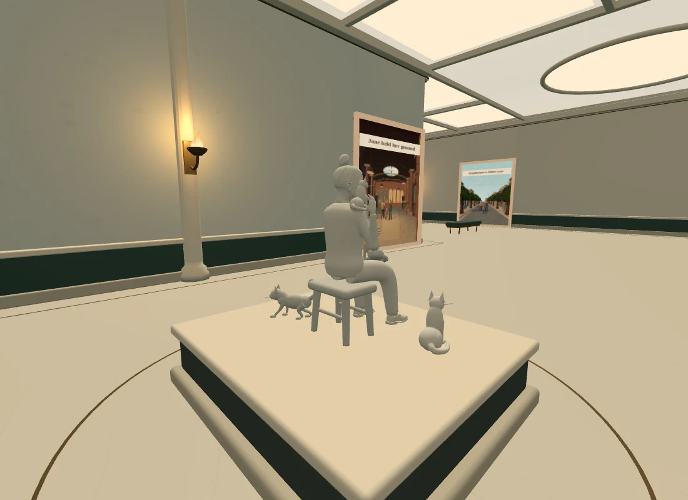
rear three quarter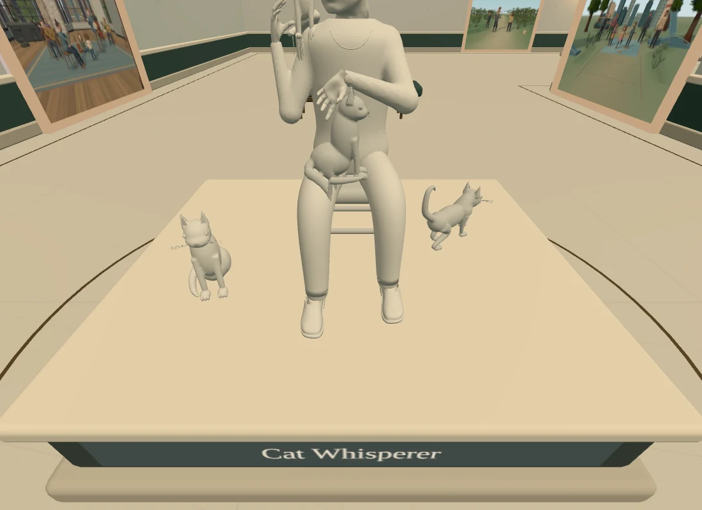
label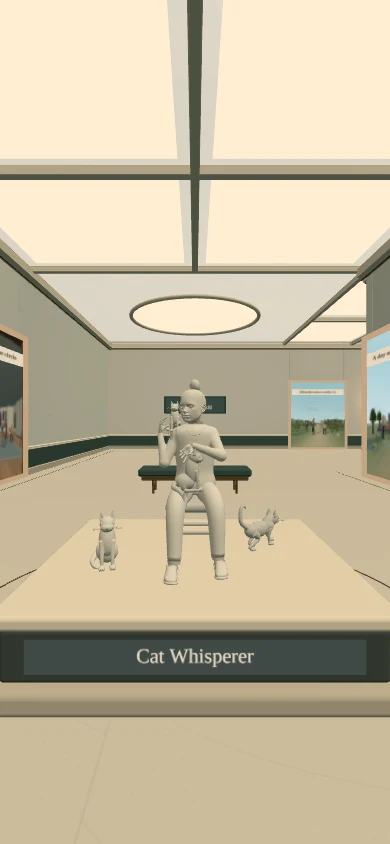
front phone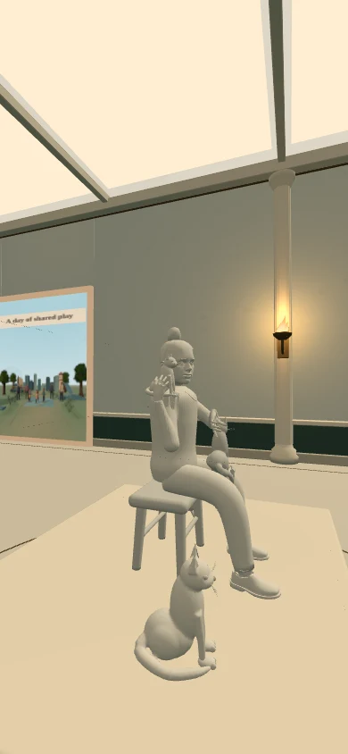
shoulder phone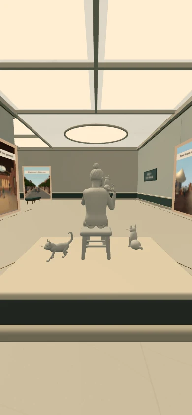
rear phonePublished as ecf46f85a14a73cd37ef3b88a017de367a672079 in Pages run 40116976297. The normal live route, app, sculpture and Credits match the reviewed bytes. Fresh production desktop and portrait loads receive the sculpture and accessible description without page errors or fallback. Full multi-angle sculpture review above used these identical model and app bytes locally.
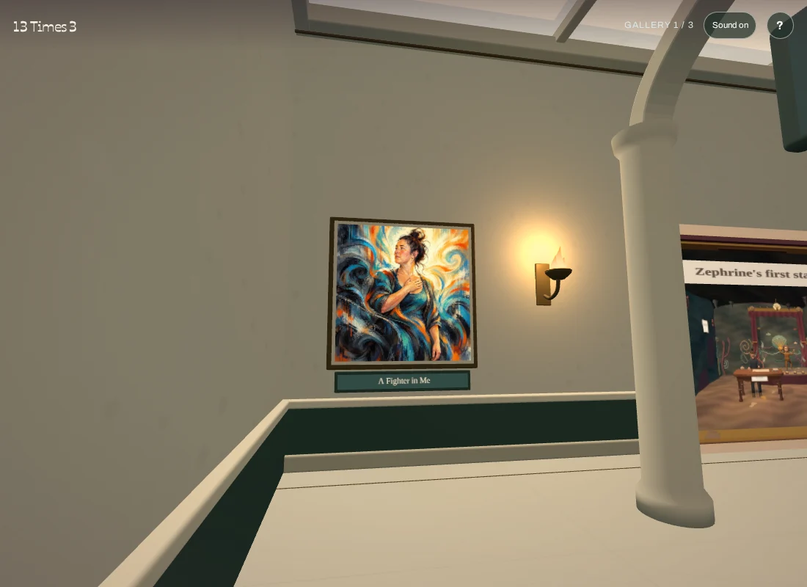
Fresh production desktop entrance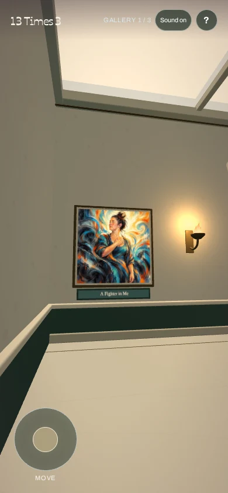
Fresh production portrait entrance